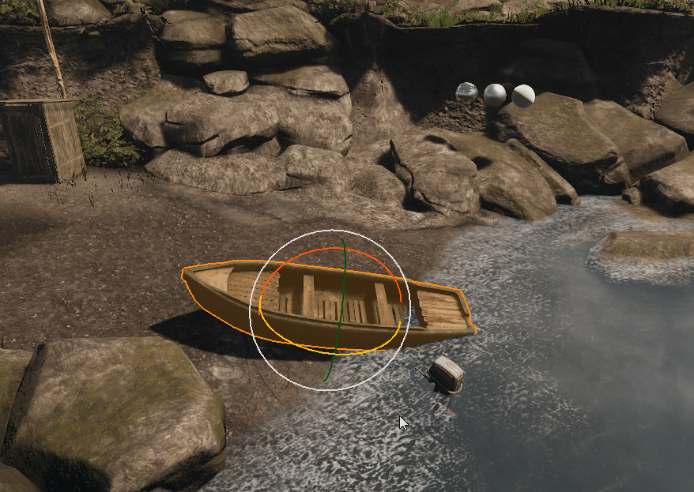

Release Highlights
Rotation Gizmo Changes
The rotation gizmo has been made more user-friendly by adding two different styles, the Dial style and the Linear style:
| Dial Style | Linear Style |
|---|---|
 |  |
For more information on these rotation styles, see Transforming Objects.
Animation
Character Tool
- Fixed: Moved PropertiesPanel from DockWidgetManager to default dock widgets.
- Fixed: BlendSpacePreview styling issues.
- Fixed: A potential null pointer access crash in DockWidgetManager serialization code.
- Fixed: Issues with uninitialized CharacterToolForm members.
Audio
Audio General
- Fixed: Hide ".cryasset" files from the ACE.
Core/System
Engine General
- Fixed: EnviromentProbe wasn't releasing resources when it was reset.
- Fixed: Removed false warning when loading a level with EnviromentProbe.
- Fixed: Loading game templates triggers Lua error.
- Fixed: User Analytics Logging shows incorrect number of uploaded events.
- Fixed: C++ Isometric-project - Mouse cursor only sometimes displayed when example-level is loaded in GameLauncher.exe.
- Fixed: Starting game templates triggers warning (Won't load level in Editor).
- Fixed: IsometricPathfinding - Character weapon attachment broken, bullets spawn at the wrong position.
- Fixed: Top Down Shooter is missing mouse cursor when jumping in game in Editor.
- Fixed: Wrong CPUID bit being tested for SSE3.
CMake
- New: Add option to enable/disable building the Engine itself.
- New: Allow building CryScaleformHelper with CMake.
- New: Allow building Shader Cache Generator with CMake.
- Optimized: Only copy .pdb and .dll files to bin/* when they are required by build options.
Action General
- Fixed: Warnings when dragging AI into level (XML reader: Can't open file).
- Fixed: Warnings when loading airfield (XML reader: Can't open file).
- Fixed: Assert is triggered while the shape of GameVolume is being created.
Game
- Fixed: Game may crash on exit when swimming.
- Fixed: Camera angle on a vehicle freaks out.
- Fixed: Boosting with the boat causes a short freeze.
Movie System
- Fixed: Assert in AnimSequence, which is triggered in special case since AnimSequence is not activated.
Graphics and Rendering
Renderer General
- Fixed: Crash on XONE - walk around in vr_demo crashing.
- Fixed: View matrix being reset on the main thread after every frame when the render is not multi-threaded - fixes issue where UnprojectFromScreen would not function in the Sandbox.
3D Engine
- Fixed: GI sun light bounce.
Physics
Physics
- Fixed: Exporting a CGF with 16-bit positions will crash the Editor and the Engine.
- Fixed: Issue with entity deletion purging.
- Fixed: PhysX - Filter scheduled-for-deletion entities in world queries.
Sandbox
Editor General
- New: Add extra mode of interaction for rotation gizmos - move along the tangent of a circle.
- Refactored: Change rotation gizmo UI - remove dotted line, add arrows to denote interaction direction.
- Fixed: Generating a Cubemap a second time triggers warning in NC (CAssetManager).
- Fixed: A freeze when trying to load a level. There's also no need to insert recursive since qt handles this already.
- Fixed: QMenuComboBox that was asserting when an item was removed. This was due to the fact that it was changing the selected index and trying to toggle the deleted items state.
- Fixed: Assert regarding accepting notifications and dealing with combined notifications.
- Fixed: Issue where selecting a CVar in the CVar dialog would return the wrong CVar.
- Fixed: Issue with double click not working.
- Fixed: Crash in property tree when detaching the tree and then performing mouse events over the widget.
- Fixed: Issue where grouping geom entities and creating prefabs had empty bounding boxes.
- Fixed: Issue where removing toolbars from the toolbar creator would assert.
- Fixed: Crash in crylink when passing unsupported characters.
- Fixed: Translation Gizmo not grid-snapping when aligned to the grid manner.
- Fixed: Bug for Geom Entity gizmo scaling reset all components.
- Fixed: Loading a .grp file will load to the current layer.
- Fixed: PFX2: Adding feature to any particle crashes the Editor.
Tools
Resource Compiler
- Fixed: Splitting of 32x32 DDNA textures.
- Fixed: Mesh node can be used as a bone.
Known Issues
- Editor crashes when loading a new map while being in another.
- Flow Graph: Prefab:EvenSource Node causes crash on creation.
- Using Ä,ä,Ö,ö,Ü,ü in project name crashes Editor/GameLauncher.exe on start.
- Creating a solid in a Navmesh while continuous update is enabled may lead to a crash.
- GAMESDK: The boat sinks directly into the water.
- GeomCache-entity isn't displayed after being dragged into a level.
- GameServer is crashing.
- Generate/repair assets metadata for a project option not working.